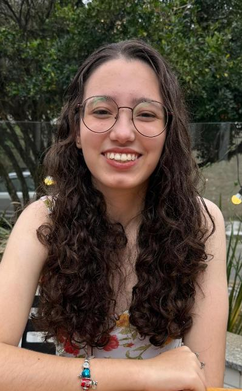
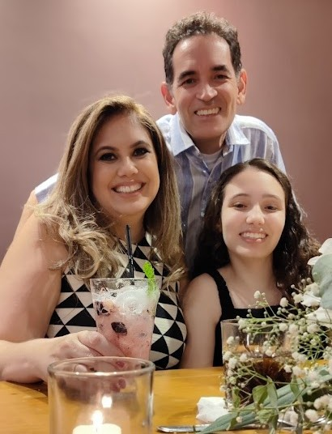
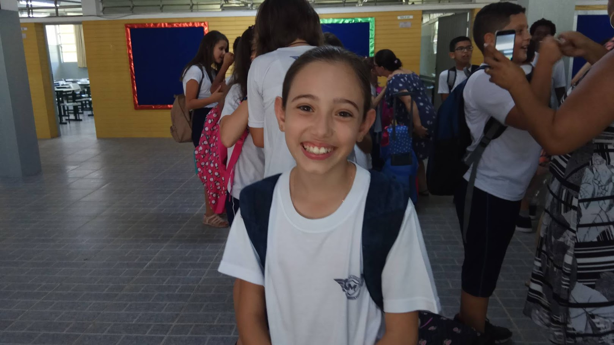
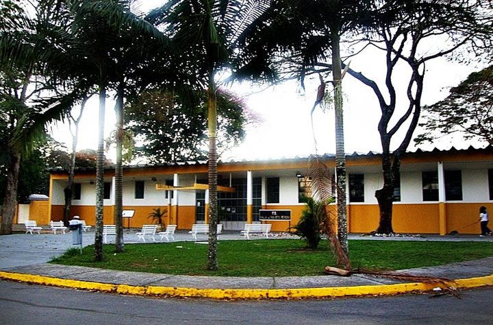

Sobre Mim

Eu sou a Gabriela Gallo
Sou aluna do 3° Ano do Ensino Médio integrado com o Ensino Técnico em Desenvolvimento de Sistemas na ETEC Profª Ilza Nascimento Pintus.
Nasci em 14/10/2008, e entrei na ETEC em 2024. Atualmente aprendi e estou aprendendo Python, HTML, CSS, Javascript, PHP, MySQL, C#, React Native, e PowerApps.
História

Quem eu sou? De onde eu vim?
Eu nasci no dia 14/10/2008. Fui nascida e criada em São José dos Campos - SP, sou a primeira pessoa da família a ser do estado de São Paulo.
Minha mãe do Centro-Oeste, nasceu e foi criada em Goiânia - GO com três irmãos, sendo ela a caçula. Já meu pai é de Itaguaí - RJ, mas foi registrado em Salvador, então para o governo, ele é do Nordeste e de Salvador - BA.

Onde eu Estudei?


Fui aluna da Escola Estadual Major Aviador José Mariotto Ferreira durante todo o meu ensino fundamental.
Entrei na ETEC em 2024, para cursar o Ensino Médio integrado ao Ensino Técnico em Desenvolvimento de Sistemas. Assim, vou finalizar o Ensino Médio este ano, 2026, se tudo seguir de acordo com o planejado.
Hobbies e Interesses

RPG - Role-Playing Game
Gosto de jogar RPG de mesa com os meus amigos, além de jogar, gosto de discutir sobre a história e possibilidades do mundo/universo do RPG.

Desenhar
Gosto de desenhar desde pequena, apesar de não ser muito talentosa ou boa nisso.

Escrever
Um dos meus grandes sonhos é escrever um livro, apesar de minhas habilidades precisarem ser melhoradas para o realizar um dia. Vejo na escrita uma forma de falar quem eu sou e no que acredito, e a acho uma atividade relaxante.

Ler
Sempre fui incentivada a ler pelos meus pais. Amo ler, é uma das atividades que acho que não consigo viver sem. Leio de contos, a romances, a poemas, e leio tanto livros físicos quanto os que estão online.